Mine opgaver
Tema 2
I tema 2 arbejdede jeg med grundlæggende webudvikling gennem opbygning af et mobilsite og en studiestartsprøve. Opgaven havde fokus på HTML og CSS samt på at forstå, hvordan man strukturerer et website ud fra mobile-first-principper og responsivt design.
Mobilesite
Studiestartsprøve
forskellen med de to links, er at den ene hjemmeside, er den ene er mobile first og den anden er responsiv med grid og flexbox på.
Proces
i mobil sitet fik jeg udleveret materiale, som jeg skulle bruge til at lave den generelle struktur af hjemmesiden. Under studiestartsprøven, skulle vi genbruge siden, men herudover brugte vi tid på at arbejde med grid, flexbox og diverse farver
 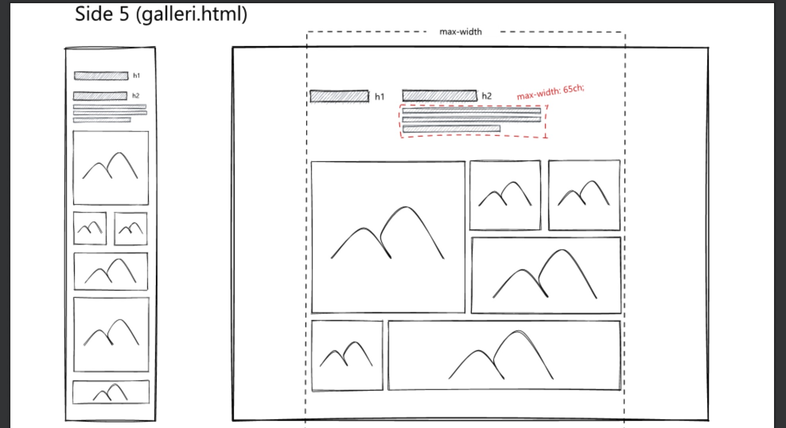
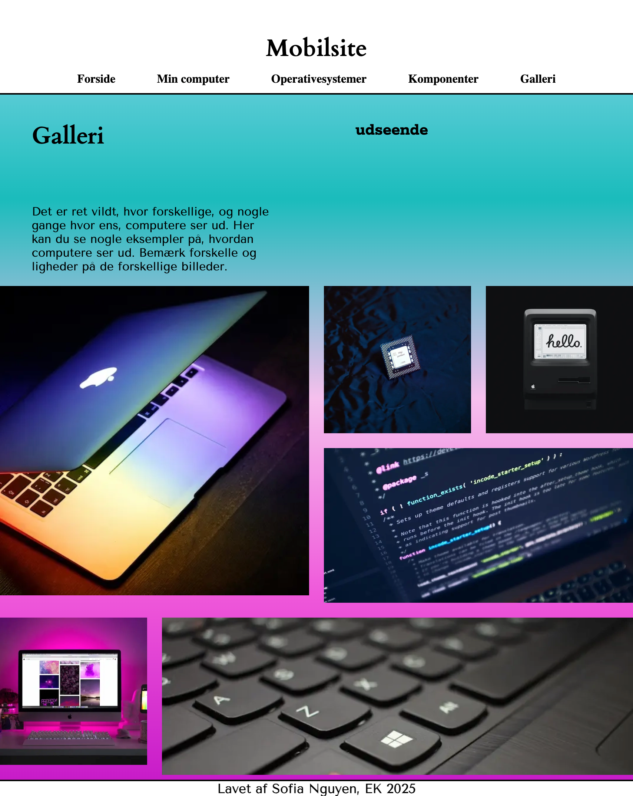
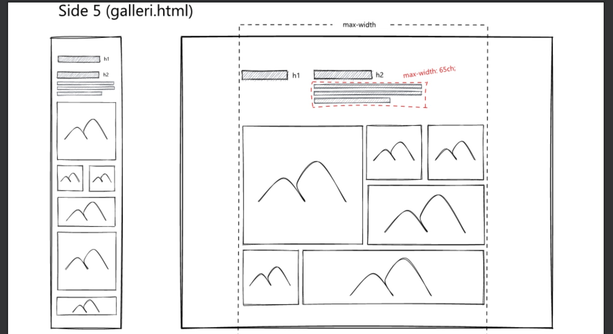
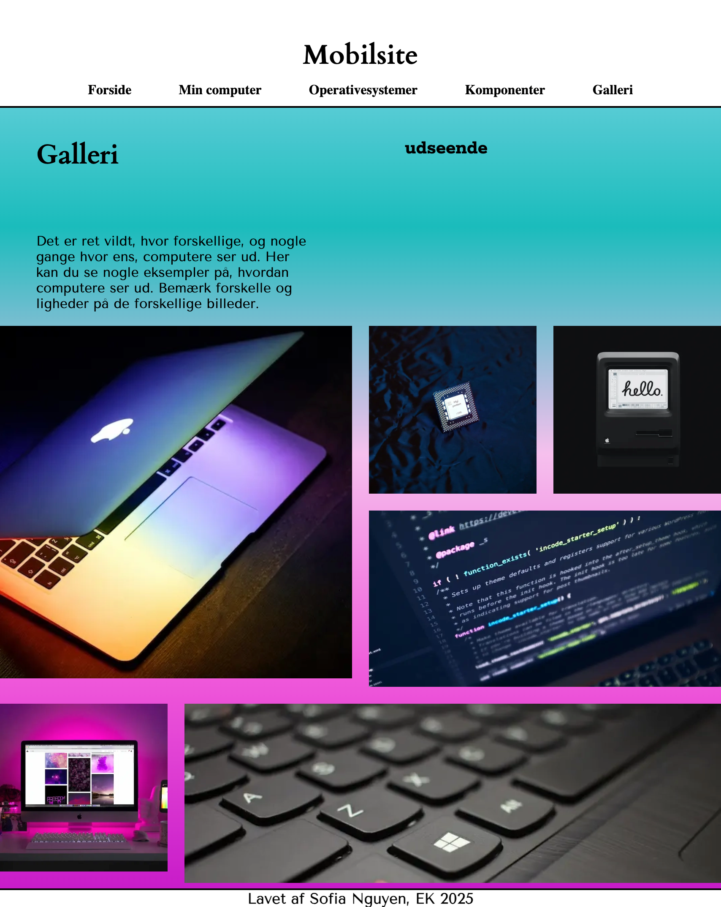
Hvad har jeg lært?
Jeg har lært at opbygge et website med semantisk HTML og at bruge CSS til layout og styling. Jeg har fået forståelse for mobile-first-tilgangen og arbejdet med responsive løsninger ved hjælp af media queries. Derudover har jeg lært at strukturere filer og kode, så projektet er overskueligt og nemt at arbejde videre med.Tema 3
I tema 3 arbejdede jeg med udvikling af et emnesite med fokus på brugeroplevelse. Opgaven handlede om at forstå målgruppens behov gennem research, prototyper og tests. herefter justerede jeg designet ud fra feedback.
Emnesite
Figma dokumentation
Proces
Under emnesitet havde jeg meget fokus på min målgruppes behov, og designet siden efter tests. jeg holdte sidet ret simpel designmæssigt, da jeg oplevede mere fokus på indholdet end selve siden. Mit moodboard og styletile hjalp mig med at holde en rød tråd i designet. udover dette havde jeg også meget fokus på Figma. her arbejdede jeg med komponenter, hi og lo-fi wireframes og klikbare prototyper.
 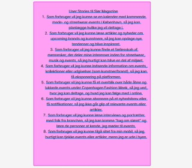
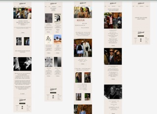
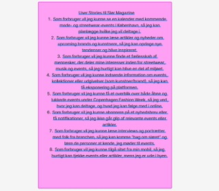
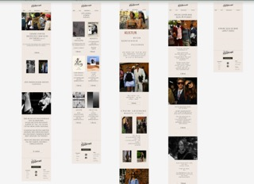
Hvad har jeg lært?
Jeg har lært at arbejde brugercentreret ved at tage udgangspunkt i målgruppe og behovet. Jeg har arbejdet med wireframes og prototyper i Figma og fået erfaring med brugertests som 5-sekunders test og tænke-højt-test. Temaet har givet mig en bedre forståelse for, hvordan UX-metoder kan bruges til at forbedre både struktur og design.
Tema 4
I tema 4 arbejdede jeg med udvikling af en brugergrænseflade med fokus på visuelle elementer, interaktion og lidt JavaScript. Opgaven havde til formål at kombinere design og funktionalitet i en hjemmeside.
Temaopgave
Figma dokumentation
Proces
Under denne periode var jeg sygelagt, dog havde jeg læst op hjemmefra. resultatet blev ikke som ønsket, men det grundlæggende viden, som var formålet med at få indlært under temaet kom på plads. Under temaet arbejdede jeg med javascript, CSS og HTML for at skabe en interaktiv oplevelse. her lærte vi bl.a. at lave en formular, vektorgrafik, arbejde med akkordions og dark mode.
Hvad har jeg lært?
Jeg lærte at arbejde med css animation, lave en simpel fiktiv formular med javascript. da vi også fik udleveret materiale i denne opgave, lærte jeg at clone i git og arbejde det ind til mit nogenlunde eget projekt. temaet har givet mig en bedre forståelse for betydning af en interaktiv brugergrænseflade og hvordan visuelle elementer kan forbedre brugeroplevelsen.
Tema 5
I tema 5 arbejdede min gruppe og jeg med indholdsproduktion i forbindelse med en virksomhedshjemmeside. Opgaven havde fokus på at skabe relevant indhold, der understøtter både målgruppe og formål for virksomheden, samt på samarbejde og planlægning i en designproces.
virksomhedssite
Figma dokumentation
Proces
I det her tema have min gruppe og jeg meget fokus på processen. Det her var første store gruppe projekt, hvor man skulle lære at arbejde med branches som gruppe. Derudover var det også en læringsproces at kommunikere så meget ift både indholdet, virksomheden og designmæssigt. Vi startede med at lave research på virksomheden og deres målgruppe, herefter lavede vi indholdsplan og struktur for siden. Under designfasen arbejdede vi med wireframes, prototyper og visuelle elementer for at skabe en sammenhængende brugeroplevelse, som passede til virksomhedens målgruppe, behov og ønsket virksomhedsidentitet.
 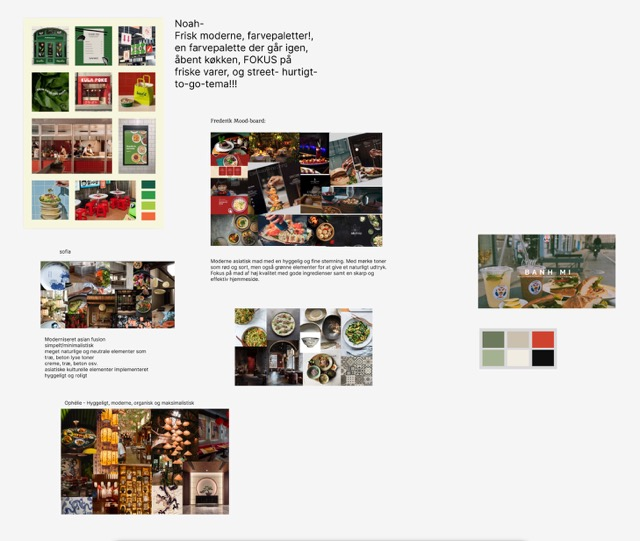
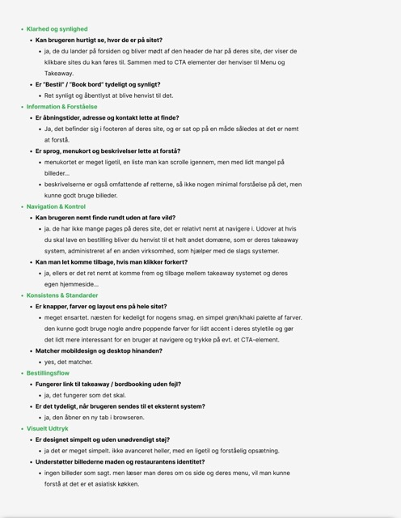
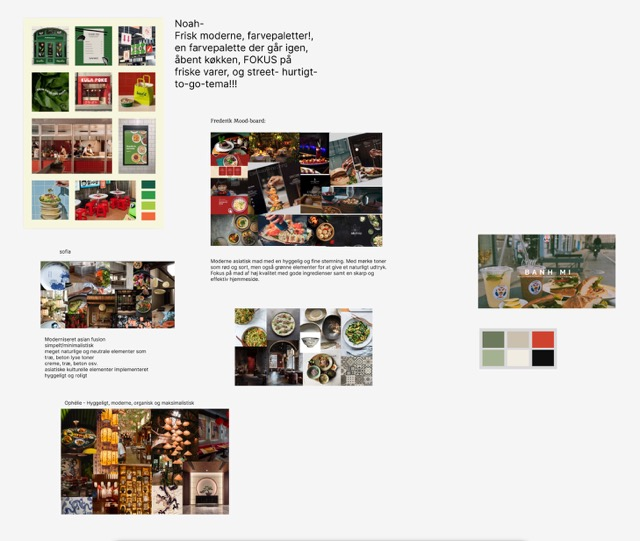
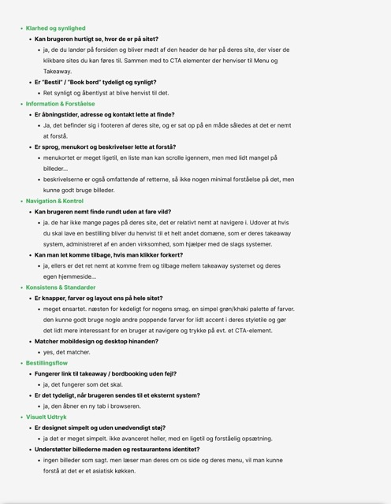
Hvad har jeg lært?
Jeg har lært at arbejde med indholdsproduktion som en del af en samlet digital løsning. Jeg har fået erfaring med at tænke indhold, design og brugeroplevelse sammen og har arbejdet med planlægning og struktur i en gruppeproces. Temaet har givet mig en bedre forståelse for, hvordan indhold spiller en central rolle i digital kommunikation. Da man skulle implementere andres kode i mit eget udover virksomhedens indhold, lærte jeg også at arbejde med git og branches i en gruppe.